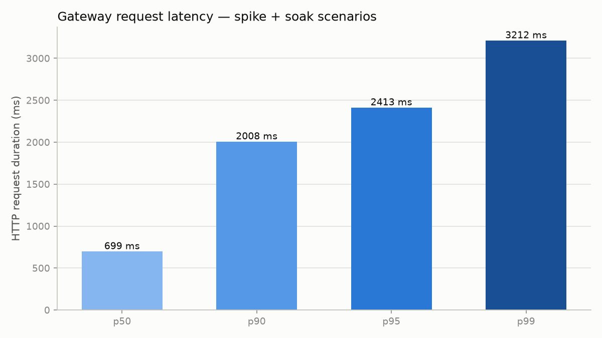
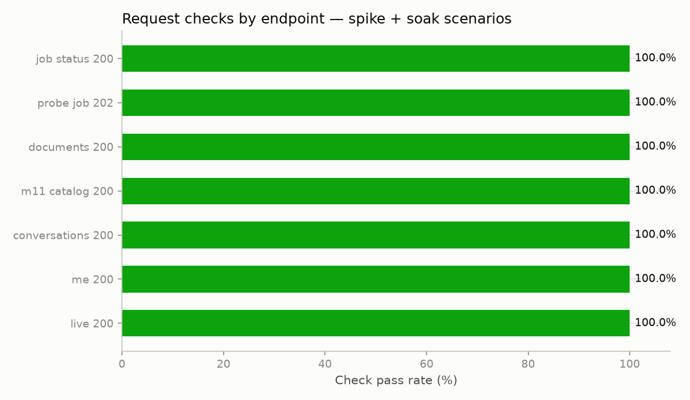
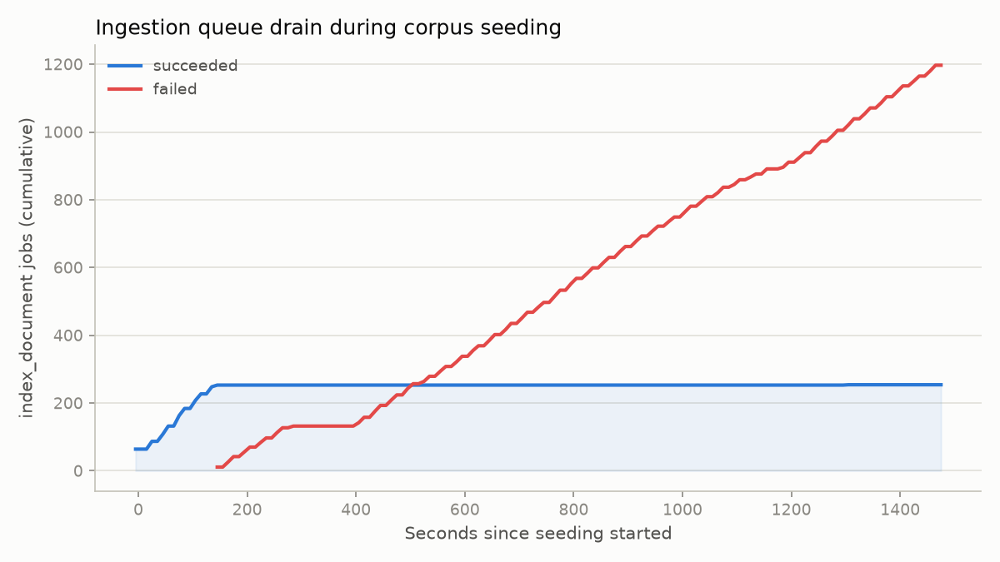
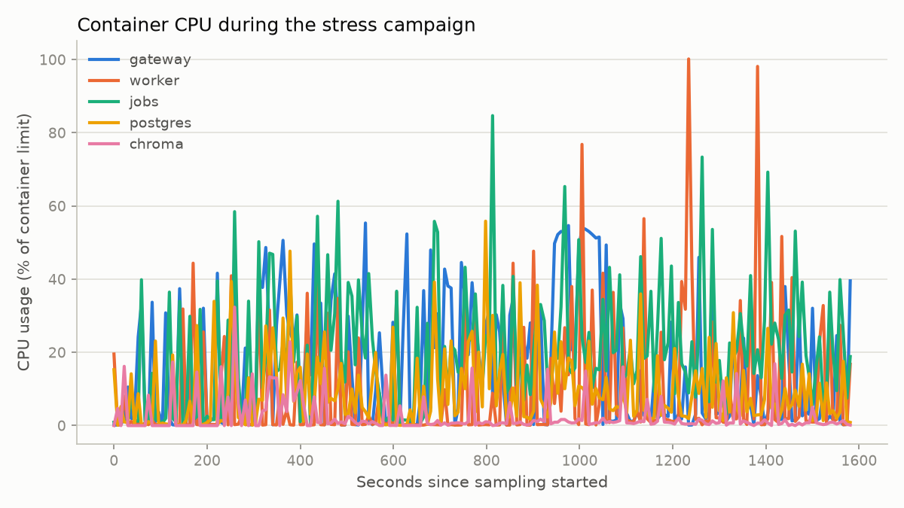
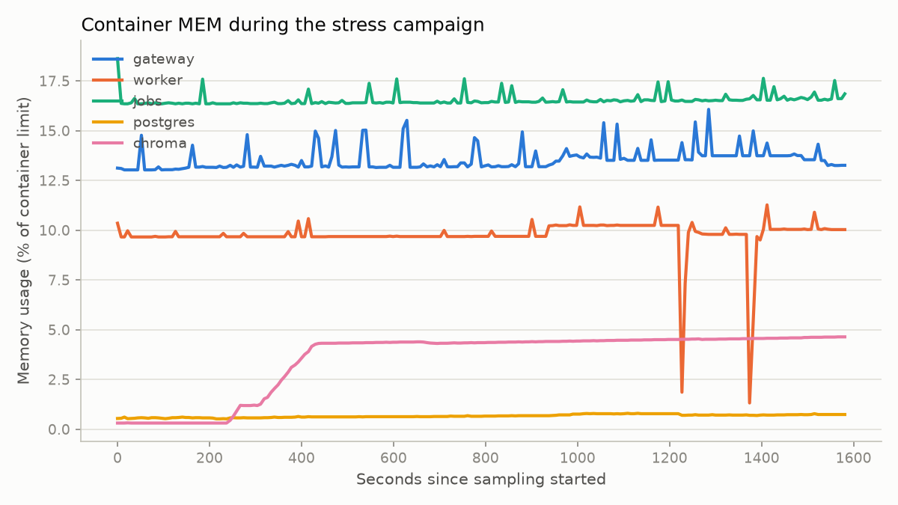

Guide · Capacity validation
Stress Test Report
Results from the stress-and-data-scale-validation roadmap feature: a
scaled-down local rehearsal of TrialScribe's capacity claims, run entirely against fake
chat and embedding providers with zero real external calls. It proved the gateway read
path holds up under spike and soak load, and it found a real, not-yet-fixed ingestion
capacity ceiling.
Scale disclosure
This was run on a developer laptop (Intel i7-8650U, 8 threads, 15 GB RAM), not the documented reference hardware (8 vCPU / 32 GiB RAM / 500 GB SSD). It used 180 accounts, 720 conversations, and 1,520 documents — a safe, laptop-sized fraction of the roadmap's target (100k accounts, 5M+ conversations, 1M+ documents). It exercises the exact same code paths the full-scale run would use. The roadmap's production capacity numbers cannot be claimed from this run alone — see scaling this up.
Headline result
The gateway-facing read path held up cleanly under load: 100% of 2,151 k6 checks passed, with a 0.00% HTTP error rate and p95 latency of 2.41 s (threshold 3 s), even while a large document-ingestion backlog was actively accumulating in the background. The campaign also did exactly what a stress campaign exists to do: it found two real bugs (fixed live) and one real, unresolved capacity ceiling — documented rather than smoothed over.
Gateway latency under spike + soak load


The important finding: an ingestion capacity ceiling

index_document job outcomes over the ~25-minute campaign, from Prometheus. Succeeded climbs to 254 in the first ~150s, then goes flat. Failed climbs almost linearly past 1,200 with no sign of levelling off.
Once the seeded corpus reached roughly 700 concurrently-active
conversations, the large majority of new document-indexing jobs stopped
completing successfully — and the failures were not transient; they did not recover on
their own within the observation window. Kafka consumer-group lag on
trialscribe.job.v1 sat around 400 messages and was not draining. Failed
documents all showed the pipeline's generic terminal error after exhausting its retry
budget, for both trial_data and research_document uploads.
Root cause was not confirmed within this run's time budget. The leading theory, given
the architecture and the CPU charts below, is ChromaIndex's
one-collection-per-conversation design — 720 conversations means 720 distinct Chroma
collections created and queried concurrently, which a single-container Chroma instance
may not sustain at that fan-out. This needs a follow-up investigation before the
roadmap's capacity numbers can cite a campaign like this as safe at target scale.
Resource ceilings

worker and jobs repeatedly hit their CPU caps — consistent with retries piling up rather than a clean failure.
What was built
scripts/seed_stress_corpus.py— seeds a scaled synthetic corpus through the real gateway HTTP API, driving the existing bulk ingestion pipeline rather than reimplementing it.infra/k6/stress.js— k6 spike (ramping-VU) and soak (constant-VU) scenarios extending the existinginfra/k6/release.jspattern.infra/release/fault.yml— a Compose overlay that injects a configurable fault (delay / timeout / rate-limit / error) into the fake chat provider, for exercising retries and circuit breaking safely.scripts/run_fault_scenario.py— drivesprovider_probejobs through a baseline → faulted → recovery sequence.scripts/sample_resources.shandscripts/generate_stress_charts.py— resource sampling and the charts on this page.- Three new
WORKER_FAKE_CHAT_FAULT_*environment variables wiring the existing fake-provider fault mechanism to Compose, so a future campaign can drive it without code changes.
Bugs found and fixed live
- Upload content-validation bug. The seed script originally sent plain text for every document, but the API requires
trial_datauploads to be a JSON object. This produced a 1-in-3 upload success rate in the first seeding batch; fixed by generating valid synthetic trial JSON. The second batch then uploaded with zero failures. - Unhandled-timeout crash. A slow response's
TimeoutErrorwasn't caught alongsideURLError, so one slow request could crash the whole seeding batch. Fixed by catching(URLError, TimeoutError, OSError)and failing that one tenant instead of the batch.
A third, smaller finding: at the release profile's 0.5-CPU auth-service allocation, sustained concurrent registration above ~4–8 in flight degrades badly (Argon2id password hashing is deliberately CPU-heavy). Seeding concurrency was tuned down live from 12 to 4.
Fault injection: attempted, not completed cleanly
The mechanism itself works and is unit-tested. Running it live surfaced two issues, both
reported honestly rather than worked around: the fault overlay first targeted the wrong
container (worker, which is only the health boundary, instead of
jobs, which actually executes work) — fixed; then the fixed run was starved
by the ingestion backlog above and was aborted deliberately rather than pushed through.
No fault-scenario chart exists for this run — see scaling this
up for how to get a clean result.
Scale used, and why
| Parameter | Roadmap target | Used here |
|---|---|---|
| Accounts | 100k+ | 180 |
| Conversations | 5M+ | 720 |
| Documents uploaded | 1M+ | 1,520 |
| Vector chunks indexed | 10M+ | ~1,780 (only 254 of 1,520 documents finished indexing — see the finding above) |
| k6 spike | — | 40 VUs, 10s ramp / 20s hold / 10s ramp-down |
| k6 soak | — | 15 VUs for 60s |
To scale this up on dedicated reference hardware
- Fix the ingestion-failure finding first: reproduce with the caught exception temporarily logged, confirm or rule out the per-conversation Chroma collection theory, and re-run to verify
succeededno longer plateaus. - Re-run on the documented reference hardware (8 vCPU / 32 GiB RAM / 500 GB SSD) with the roadmap's actual targets over a multi-hour or multi-day window.
- Raise
WORKER_PROVIDER_MAX_CONCURRENCY, the auth service's CPU allocation, and thejobsservice's CPU/replica count before that run. - Run the fault-injection scenario on a freshly-seeded, idle stack first, then repeat under background load.
- Extend the seed script to cover multi-member organizations via the existing invitation flow, so RBAC-scoped listing is exercised at scale too.
Exact reproduction commands
./scripts.sh env
./scripts.sh install
./scripts.sh auth keys
./scripts.sh release up
# Seed the corpus (rerun with a fresh --out each time):
uv run --frozen --package trialscribe-worker python scripts/seed_stress_corpus.py \
--accounts 180 --conversations-per-org 4 --documents-per-conversation 3 \
--min-doc-chars 6000 --max-doc-chars 9000 --concurrency 4 \
--out infra/k6/results/seed-summary.json
# Resource sampling, in the background across the whole campaign:
scripts/sample_resources.sh trialscribe-release infra/k6/results/resource-samples.csv \
/tmp/stop-sampler 5
# Spike + soak load:
docker run --rm --network host \
-e BASE_URL=http://127.0.0.1:8000 \
-v "$(pwd)/infra/k6/stress.js:/scripts/stress.js:ro" \
-v "$(pwd)/infra/k6/results:/results" \
grafana/k6:2.2.0 run --summary-export /results/stress-summary.json \
/scripts/stress.js
# Fault injection (best run before bulk seeding, per the finding above):
uv run --frozen --package trialscribe-worker python scripts/run_fault_scenario.py \
--seed-summary infra/k6/results/seed-summary.json \
--jobs-per-phase 8 --out infra/k6/results/fault-scenario.json
# Charts:
uv run --with matplotlib==3.11.2 python scripts/generate_stress_charts.py \
--seed-summary infra/k6/results/seed-summary.json \
--k6-summary infra/k6/results/stress-summary.json \
--resource-csv infra/k6/results/resource-samples.csv \
--out-dir docs/assets
./scripts.sh release down
Full methodology, both seeding batches, and every caveat:
the source report in docs-src/stress-test-report.md.